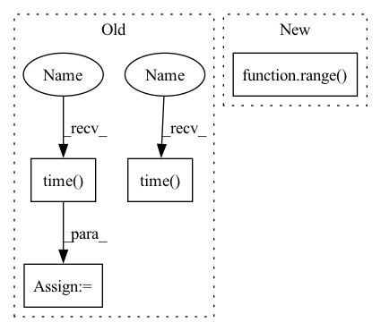

Pattern ID :41103
Before Change
print("MyRank: ", comm.myRank.value)
arr = np.ones(shape)*comm.localRank.value
arr = ndarray.array(arr, ctx=ndarray.gpu(comm.localRank.value))
start = time.time()
if comm.myRank.value == 0:
comm.dlarraySend(arr, ncclDataType_t.ncclFloat32, 1)
else:
comm.dlarrayRecv(arr, ncclDataType_t.ncclFloat32, 0)
comm.stream.sync()
end = time .time()
secs = end - start
// size: /Bytes
// dur_time: /sAfter Change
def test_p2p(arr, comm, stream, iterations=10):
size = 4 * np.prod(arr.shape, dtype=int)
duration = 0
for _ in range( iterations) :
start = time()
if comm.rank == 0:
comm.dlarraySend(arr, ncclDataType_t.ncclFloat32, 1, stream)In pattern: SUPERPATTERN
Frequency: 3
Non-data size: 4
Instances Fragment ID: 115833541
Project Name: hsword/hetu
Commit Name: de6a6b170885def9398eb2b8685f574fa3420140
Time: 2021-10-11
Author: 657671989@qq.com
File Name: tests/test_nccl_bandwidth.py
M Class Name: AnonimousClass
N Class Name: AnonimousClass
M Method Name: test_p2p(4)
N Method Name: test_p2p(3)
M Parent Class:
N Parent Class:
M File Name: tests/test_nccl_bandwidth.py
N File Name: tests/test_nccl_bandwidth.py
M Start Line: 26
M End Line: 45
N Start Line: 28
N End Line: 41
Before Change
device = device,
// Precision settings
numeric_precision = numeric_precision)
print("- Creation of Training AutoregressiveDataset: {:.0f}s".format(time.time() - t_i))
t_i = time.time()
trainingDataLoader = AutoregressiveDataLoader(dataset = trainingDataset,
batch_size = training_batch_size,
drop_last_batch = drop_last_batch,
random_shuffle = random_shuffle,
num_workers = num_workers,
prefetch_factor = prefetch_factor,
prefetch_in_GPU = prefetch_in_GPU,
pin_memory = pin_memory,
asyncronous_GPU_transfer = asyncronous_GPU_transfer,
device = device)
print("- Creation of Training AutoregressiveDataLoader: {:.0f}s".format(time.time() - t_i))
////// Create validation Autoregressive Dataset and DataLoader
if da_validation_dynamic is not None:
t_i = time.time()
validationDataset = AutoregressiveDataset(da_dynamic = da_validation_dynamic,
da_bc = da_validation_bc,
da_static = da_static,
scaler = scaler,After Change
// --> Option to disable gradients ...
// --> Add something related to torch.cuda.memory_summary()
if (autotune_num_workers is True) and (num_workers > 0):
num_workers_list = list(range( 0, num_workers) )
training_num_workers = tune_num_workers(dataset = trainingDataset,
model = model,
optimizer = optimizer, Fragment ID: 115833539
Project Name: deepsphere/deepsphere-weather
Commit Name: 5bd7247f539bf55deae1a5ed120b9a1ea4751e3b
Time: 2021-02-12
Author: gionata.ghiggi@gmail.com
File Name: modules/training_autoregressive.py
M Class Name: AnonimousClass
N Class Name: AnonimousClass
M Method Name: AutoregressiveTraining(33)
N Method Name: AutoregressiveTraining(32)
M Parent Class:
N Parent Class:
M File Name: modules/training_autoregressive.py
N File Name: modules/training_autoregressive.py
M Start Line: 123
M End Line: 195
N Start Line: 362
N End Line: 491
Before Change
if self._forward_kw_names is None:
start = time.time()
outputs = self.model(*inputs)
end = time.time()
else:
inputs_dict = dict(zip(self._forward_kw_names, inputs))
start = time.time()
outputs = self.model(**inputs_dict)
end = time.time()
out_dict = OrderedDict()After Change
out_dict = OrderedDict()
if self.output_names is None:
self.output_names = [f"output__{i}" for i in range( len(outputs)) ]
for name, output in zip(self.output_names, outputs):
out_dict[name] = output.cpu().numpy()
end = time.time() Fragment ID: 115833537
Project Name: triton-inference-server/model_navigator
Commit Name: 3d1dcb4d73be04622ab7d541ea506a54557d95e5
Time: 2022-02-22
Author: ptarasiewicz@nvidia.com
File Name: model_navigator/framework_api/runners/pyt.py
M Class Name: PytRunner
N Class Name: PytRunner
M Method Name: infer_impl(2)
N Method Name: infer_impl(2)
M Parent Class: BaseRunner
N Parent Class: BaseRunner
M File Name: model_navigator/framework_api/runners/pyt.py
N File Name: model_navigator/framework_api/runners/pyt.py
M Start Line: 65
M End Line: 72
N Start Line: 60
N End Line: 77
Before Change
print("MyRank: ", comm.myRank.value)
arr = np.ones(shape)*comm.localRank.value
arr = ndarray.array(arr, ctx=ndarray.gpu(comm.localRank.value))
start = time.time()
if comm.myRank.value == 0:
comm.dlarraySend(arr, ncclDataType_t.ncclFloat32, 1)
else:
comm.dlarrayRecv(arr, ncclDataType_t.ncclFloat32, 0)
comm.stream.sync()
end = time.time()
secs = end - start
// size: /Bytes
// dur_time: /sAfter Change
def test_p2p(arr, comm, stream, iterations=10):
size = 4 * np.prod(arr.shape, dtype=int)
duration = 0
for _ in range( iterations) :
start = time()
if comm.rank == 0:
comm.dlarraySend(arr, ncclDataType_t.ncclFloat32, 1, stream) Fragment ID: 115833534
Project Name: hsword/hetu
Commit Name: de6a6b170885def9398eb2b8685f574fa3420140
Time: 2021-10-11
Author: 657671989@qq.com
File Name: tests/test_nccl_bandwidth.py
M Class Name: AnonimousClass
N Class Name: AnonimousClass
M Method Name: test_p2p(4)
N Method Name: test_p2p(3)
M Parent Class:
N Parent Class:
M File Name: tests/test_nccl_bandwidth.py
N File Name: tests/test_nccl_bandwidth.py
M Start Line: 26
M End Line: 45
N Start Line: 28
N End Line: 41